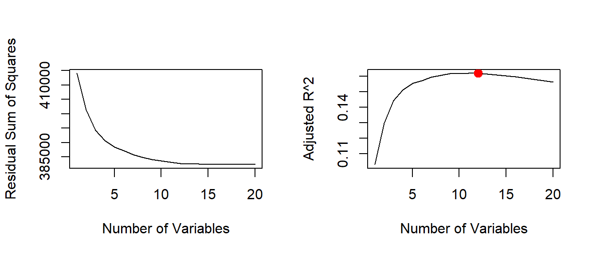
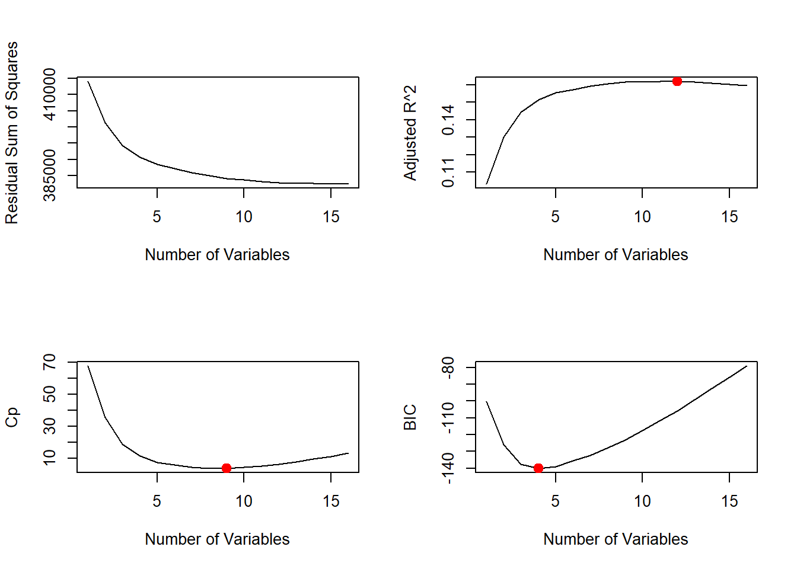
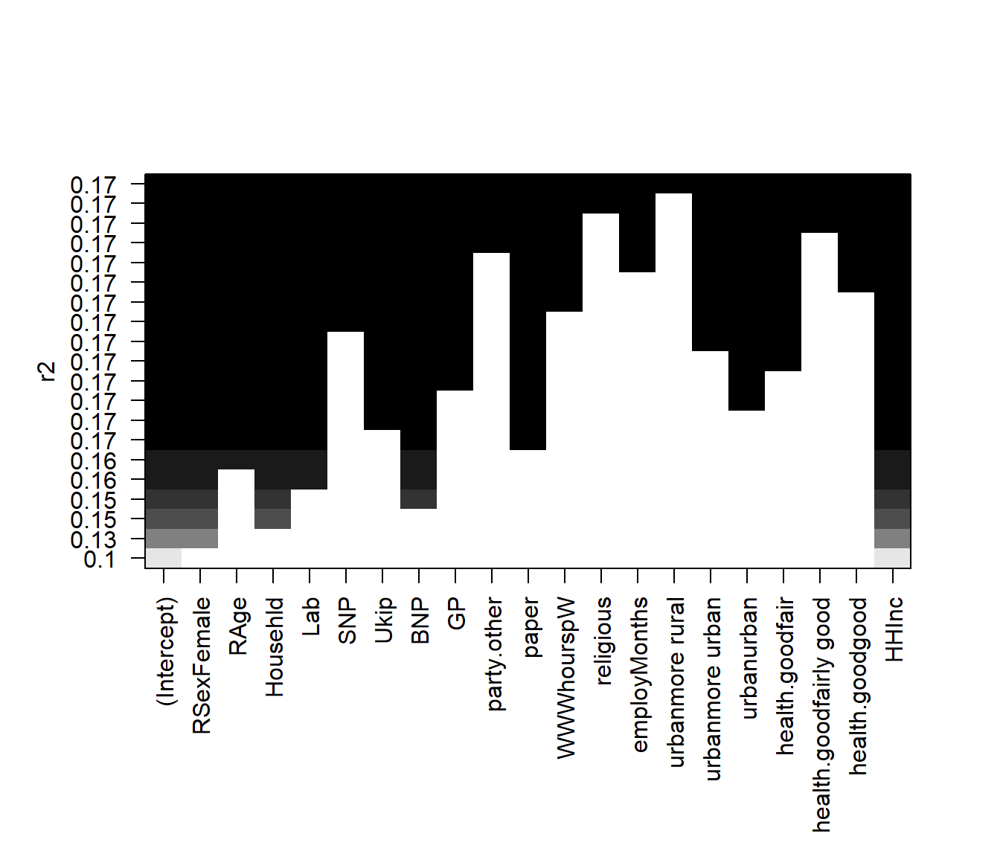
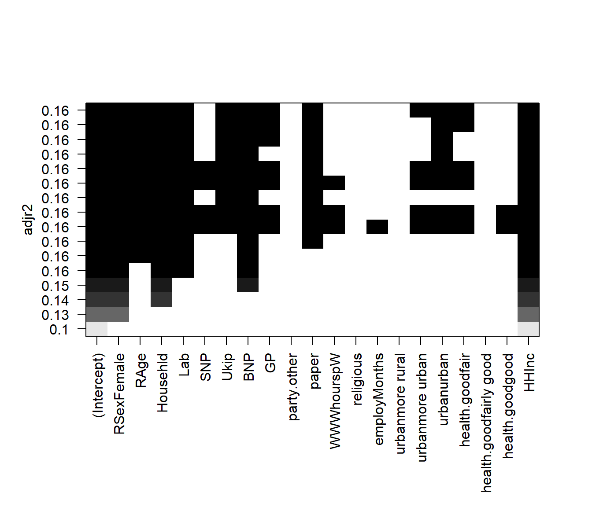
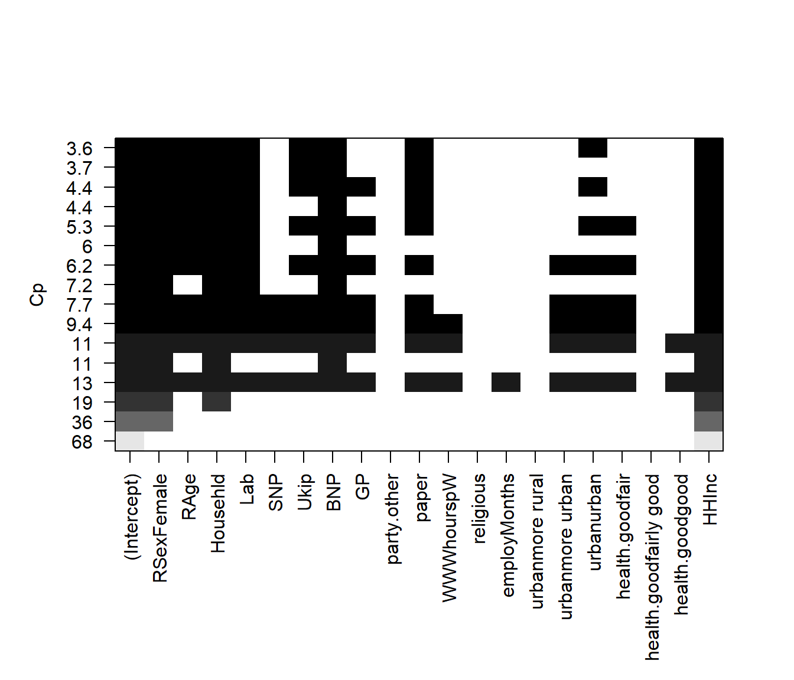
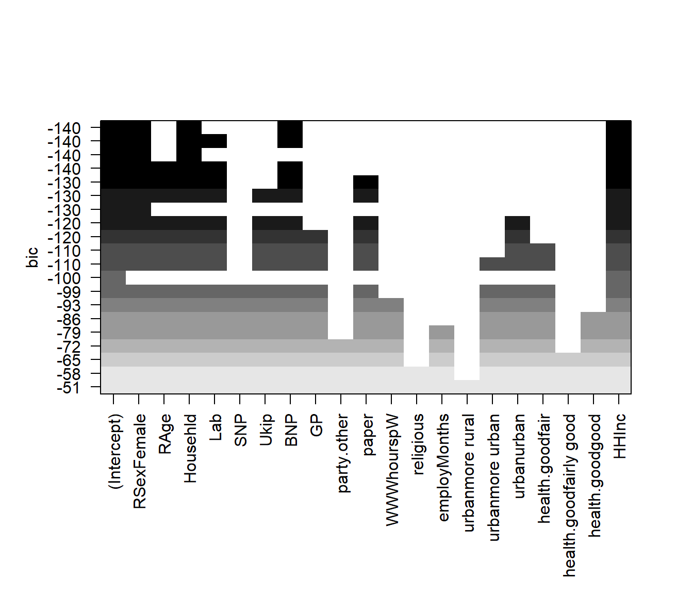
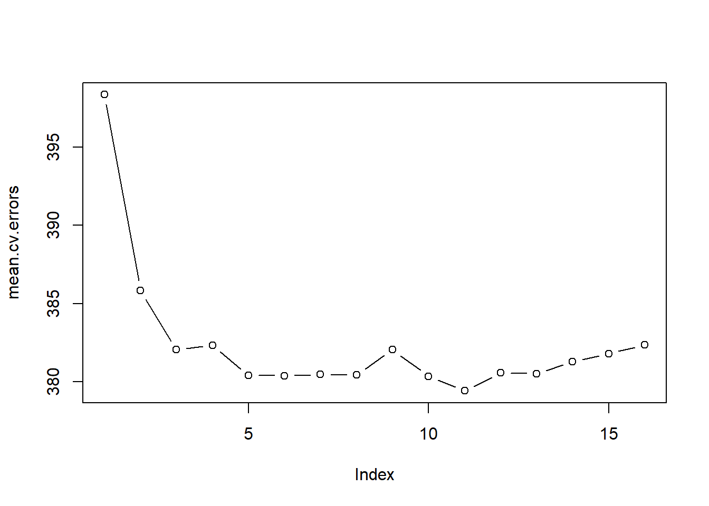

We start by clearing our workspace.
# clear workspace
rm( list = ls() )We use a modified data set on non-western immigrants (we inserted some missings). Download the data here.
The codebook is:
| Variable Name | Description |
|---|---|
| IMMBRIT | Out of every 100 people in Britain, how many do you think are immigrants from Non-western countries? |
| over.estimate | 1 if estimate is higher than 10.7%. |
| RSex | 1 = male, 2 = female |
| RAge | Age of respondent |
| Househld | Number of people living in respondent’s household |
| Cons, Lab, SNP, Ukip, BNP, GP, party.other | Party self-identification |
| paper | Do you normally read any daily morning newspaper 3+ times/week? |
| WWWhourspW | How many hours WWW per week? |
| religious | Do you regard yourself as belonging to any particular religion? |
| employMonths | How many mnths w. present employer? |
| urban | Population density, 4 categories (highest density is 4, lowest is 1) |
| health.good | How is your health in general for someone of your age? (0: bad, 1: fair, 2: fairly good, 3: good) |
| HHInc | Income bands for household, high number = high HH income |
# load foreigners data
load("your directory/BSAS_manip_missings.RData")We check our data set for missing values variable by variable using apply(), is.na(), and table().
# check for missing values
apply(data2, 2, function(x) table(is.na(x))["TRUE"] )## IMMBRIT over.estimate RSex RAge Househld
## 8 NA NA NA NA
## Cons Lab SNP Ukip BNP
## NA NA NA NA NA
## GP party.other paper WWWhourspW religious
## NA NA NA NA NA
## employMonths urban health.good HHInc
## NA NA NA NA# immbrit has missings which we drop
data2 <- data2[ !is.na(data2$IMMBRIT), ]We now declare the categorical variables to be factors and create a copy of the main data set that excludes over.estimate.
# declare factor variables
data2$urban <- factor(data2$urban, labels = c("rural", "more rural", "more urban", "urban"))
data2$RSex <- factor(data2$RSex, labels = c("Male", "Female"))
data2$health.good <- factor(data2$health.good, labels = c("bad", "fair", "fairly good", "good") )
# keep only variables to use for subset selection
df <- dplyr::select(data2, IMMBRIT, RSex, RAge, Househld, Lab, SNP, Ukip,
BNP, GP, party.other, paper, WWWhourspW, religious, employMonths,
urban, health.good, HHInc)We use the regsubsets() function to identify the best model based on subset selection quantified by the residual sum of squares (RSS) for each model.
library(leaps)## Warning: package 'leaps' was built under R version 3.4.1# run best subset selection
regfit.full <- regsubsets(IMMBRIT ~ ., data = df)
summary(regfit.full)## Subset selection object
## Call: regsubsets.formula(IMMBRIT ~ ., data = df)
## 20 Variables (and intercept)
## Forced in Forced out
## RSexFemale FALSE FALSE
## RAge FALSE FALSE
## Househld FALSE FALSE
## Lab FALSE FALSE
## SNP FALSE FALSE
## Ukip FALSE FALSE
## BNP FALSE FALSE
## GP FALSE FALSE
## party.other FALSE FALSE
## paper FALSE FALSE
## WWWhourspW FALSE FALSE
## religious FALSE FALSE
## employMonths FALSE FALSE
## urbanmore rural FALSE FALSE
## urbanmore urban FALSE FALSE
## urbanurban FALSE FALSE
## health.goodfair FALSE FALSE
## health.goodfairly good FALSE FALSE
## health.goodgood FALSE FALSE
## HHInc FALSE FALSE
## 1 subsets of each size up to 8
## Selection Algorithm: exhaustive
## RSexFemale RAge Househld Lab SNP Ukip BNP GP party.other paper
## 1 ( 1 ) " " " " " " " " " " " " " " " " " " " "
## 2 ( 1 ) "*" " " " " " " " " " " " " " " " " " "
## 3 ( 1 ) "*" " " "*" " " " " " " " " " " " " " "
## 4 ( 1 ) "*" " " "*" " " " " " " "*" " " " " " "
## 5 ( 1 ) "*" " " "*" "*" " " " " "*" " " " " " "
## 6 ( 1 ) "*" "*" "*" "*" " " " " "*" " " " " " "
## 7 ( 1 ) "*" "*" "*" "*" " " " " "*" " " " " "*"
## 8 ( 1 ) "*" "*" "*" "*" " " "*" "*" " " " " "*"
## WWWhourspW religious employMonths urbanmore rural urbanmore urban
## 1 ( 1 ) " " " " " " " " " "
## 2 ( 1 ) " " " " " " " " " "
## 3 ( 1 ) " " " " " " " " " "
## 4 ( 1 ) " " " " " " " " " "
## 5 ( 1 ) " " " " " " " " " "
## 6 ( 1 ) " " " " " " " " " "
## 7 ( 1 ) " " " " " " " " " "
## 8 ( 1 ) " " " " " " " " " "
## urbanurban health.goodfair health.goodfairly good health.goodgood
## 1 ( 1 ) " " " " " " " "
## 2 ( 1 ) " " " " " " " "
## 3 ( 1 ) " " " " " " " "
## 4 ( 1 ) " " " " " " " "
## 5 ( 1 ) " " " " " " " "
## 6 ( 1 ) " " " " " " " "
## 7 ( 1 ) " " " " " " " "
## 8 ( 1 ) " " " " " " " "
## HHInc
## 1 ( 1 ) "*"
## 2 ( 1 ) "*"
## 3 ( 1 ) "*"
## 4 ( 1 ) "*"
## 5 ( 1 ) "*"
## 6 ( 1 ) "*"
## 7 ( 1 ) "*"
## 8 ( 1 ) "*"With the nvmax parameter we control the number of variables in the model. The default used by regsubsets() is 8.
# increase the max number of variables
regfit.full <- regsubsets(IMMBRIT ~ ., data = df, nvmax = 20)
reg.summary <- summary(regfit.full)We can look at the components of the reg.summary object using the names() function and examine the \(R^2\) statistic stored in rsq.
names(reg.summary)## [1] "which" "rsq" "rss" "adjr2" "cp" "bic" "outmat" "obj"reg.summary$rsq## [1] 0.1040145 0.1316228 0.1469748 0.1546376 0.1595363 0.1621379 0.1650727
## [8] 0.1672137 0.1689371 0.1699393 0.1708328 0.1717100 0.1721041 0.1723151
## [15] 0.1725153 0.1726176 0.1726758 0.1726769 0.1726772 0.1726772Next, we plot the \(RSS\) and adjusted \(R^2\) and add a point where \(R^2\) is at its maximum using the which.max() function.
par( mfrow = c(2,2) ) # 2 row, 2 columns in plot window
plot(reg.summary$rss, xlab = "Number of Variables", ylab = "Residual Sum of Squares", type = "l")
plot(reg.summary$adjr2, xlab = "Number of Variables", ylab = "Adjusted R^2", type = "l")
# find the peak of adj. R^2
adjr2.max <- which.max( reg.summary$adjr2 )
points(adjr2.max, reg.summary$adjr2[adjr2.max], col = "red", pch = 20, cex = 2)
We can also plot the the \(C_{p}\) statistic and \(BIC\) and identify the minimum points for each statistic using the \(which.min()\) function.
# cp
plot(reg.summary$cp, xlab = "Number of Variables", ylab = "Cp", type = "l")
cp.min <- which.min(reg.summary$cp)
points(cp.min, reg.summary$cp[cp.min], col = "red", cex = 2, pch = 20)
# bic
bic.min <- which.min(reg.summary$bic)
plot(reg.summary$bic, xlab = "Number of Variables", ylab = "BIC", type = "l")
points(bic.min, reg.summary$bic[bic.min], col = "red", cex = 2, pch = 20)
The estimated models from regsubsets() can be directly plotted to compare the differences based on the values of \(R^2\), adjusted \(R^2\), \(C_{p}\) and \(BIC\) statistics.
par( mfrow = c(1,1), oma = c(3,0,0,0))
# plot model comparison based on R^2
plot(regfit.full, scale = "r2")
# plot model comparison based on adjusted R^2
plot(regfit.full, scale = "adjr2")
# plot model comparison based on adjusted CP
plot(regfit.full, scale = "Cp")
# plot model comparison based on adjusted BIC
plot(regfit.full, scale = "bic")
To show the coefficients associated with the model with the lowest \(BIC\), we use the coef() function.
coef(regfit.full, bic.min)## (Intercept) RSexFemale Househld BNP HHInc
## 34.576036 6.970692 2.000771 10.830195 -1.511176The default method used by regsubsets() is exhaustive but we can change it to forward or backward and compare the results.
# run forward selection
regfit.fwd <- regsubsets(IMMBRIT ~ ., data = df, nvmax = 20, method = "forward")
summary(regfit.fwd)## Subset selection object
## Call: regsubsets.formula(IMMBRIT ~ ., data = df, nvmax = 20, method = "forward")
## 20 Variables (and intercept)
## Forced in Forced out
## RSexFemale FALSE FALSE
## RAge FALSE FALSE
## Househld FALSE FALSE
## Lab FALSE FALSE
## SNP FALSE FALSE
## Ukip FALSE FALSE
## BNP FALSE FALSE
## GP FALSE FALSE
## party.other FALSE FALSE
## paper FALSE FALSE
## WWWhourspW FALSE FALSE
## religious FALSE FALSE
## employMonths FALSE FALSE
## urbanmore rural FALSE FALSE
## urbanmore urban FALSE FALSE
## urbanurban FALSE FALSE
## health.goodfair FALSE FALSE
## health.goodfairly good FALSE FALSE
## health.goodgood FALSE FALSE
## HHInc FALSE FALSE
## 1 subsets of each size up to 20
## Selection Algorithm: forward
## RSexFemale RAge Househld Lab SNP Ukip BNP GP party.other paper
## 1 ( 1 ) " " " " " " " " " " " " " " " " " " " "
## 2 ( 1 ) "*" " " " " " " " " " " " " " " " " " "
## 3 ( 1 ) "*" " " "*" " " " " " " " " " " " " " "
## 4 ( 1 ) "*" " " "*" " " " " " " "*" " " " " " "
## 5 ( 1 ) "*" " " "*" "*" " " " " "*" " " " " " "
## 6 ( 1 ) "*" "*" "*" "*" " " " " "*" " " " " " "
## 7 ( 1 ) "*" "*" "*" "*" " " " " "*" " " " " "*"
## 8 ( 1 ) "*" "*" "*" "*" " " "*" "*" " " " " "*"
## 9 ( 1 ) "*" "*" "*" "*" " " "*" "*" " " " " "*"
## 10 ( 1 ) "*" "*" "*" "*" " " "*" "*" "*" " " "*"
## 11 ( 1 ) "*" "*" "*" "*" " " "*" "*" "*" " " "*"
## 12 ( 1 ) "*" "*" "*" "*" " " "*" "*" "*" " " "*"
## 13 ( 1 ) "*" "*" "*" "*" "*" "*" "*" "*" " " "*"
## 14 ( 1 ) "*" "*" "*" "*" "*" "*" "*" "*" " " "*"
## 15 ( 1 ) "*" "*" "*" "*" "*" "*" "*" "*" " " "*"
## 16 ( 1 ) "*" "*" "*" "*" "*" "*" "*" "*" " " "*"
## 17 ( 1 ) "*" "*" "*" "*" "*" "*" "*" "*" "*" "*"
## 18 ( 1 ) "*" "*" "*" "*" "*" "*" "*" "*" "*" "*"
## 19 ( 1 ) "*" "*" "*" "*" "*" "*" "*" "*" "*" "*"
## 20 ( 1 ) "*" "*" "*" "*" "*" "*" "*" "*" "*" "*"
## WWWhourspW religious employMonths urbanmore rural
## 1 ( 1 ) " " " " " " " "
## 2 ( 1 ) " " " " " " " "
## 3 ( 1 ) " " " " " " " "
## 4 ( 1 ) " " " " " " " "
## 5 ( 1 ) " " " " " " " "
## 6 ( 1 ) " " " " " " " "
## 7 ( 1 ) " " " " " " " "
## 8 ( 1 ) " " " " " " " "
## 9 ( 1 ) " " " " " " " "
## 10 ( 1 ) " " " " " " " "
## 11 ( 1 ) " " " " " " " "
## 12 ( 1 ) " " " " " " " "
## 13 ( 1 ) " " " " " " " "
## 14 ( 1 ) "*" " " " " " "
## 15 ( 1 ) "*" " " " " " "
## 16 ( 1 ) "*" " " "*" " "
## 17 ( 1 ) "*" " " "*" " "
## 18 ( 1 ) "*" " " "*" " "
## 19 ( 1 ) "*" "*" "*" " "
## 20 ( 1 ) "*" "*" "*" "*"
## urbanmore urban urbanurban health.goodfair
## 1 ( 1 ) " " " " " "
## 2 ( 1 ) " " " " " "
## 3 ( 1 ) " " " " " "
## 4 ( 1 ) " " " " " "
## 5 ( 1 ) " " " " " "
## 6 ( 1 ) " " " " " "
## 7 ( 1 ) " " " " " "
## 8 ( 1 ) " " " " " "
## 9 ( 1 ) " " "*" " "
## 10 ( 1 ) " " "*" " "
## 11 ( 1 ) " " "*" "*"
## 12 ( 1 ) "*" "*" "*"
## 13 ( 1 ) "*" "*" "*"
## 14 ( 1 ) "*" "*" "*"
## 15 ( 1 ) "*" "*" "*"
## 16 ( 1 ) "*" "*" "*"
## 17 ( 1 ) "*" "*" "*"
## 18 ( 1 ) "*" "*" "*"
## 19 ( 1 ) "*" "*" "*"
## 20 ( 1 ) "*" "*" "*"
## health.goodfairly good health.goodgood HHInc
## 1 ( 1 ) " " " " "*"
## 2 ( 1 ) " " " " "*"
## 3 ( 1 ) " " " " "*"
## 4 ( 1 ) " " " " "*"
## 5 ( 1 ) " " " " "*"
## 6 ( 1 ) " " " " "*"
## 7 ( 1 ) " " " " "*"
## 8 ( 1 ) " " " " "*"
## 9 ( 1 ) " " " " "*"
## 10 ( 1 ) " " " " "*"
## 11 ( 1 ) " " " " "*"
## 12 ( 1 ) " " " " "*"
## 13 ( 1 ) " " " " "*"
## 14 ( 1 ) " " " " "*"
## 15 ( 1 ) " " "*" "*"
## 16 ( 1 ) " " "*" "*"
## 17 ( 1 ) " " "*" "*"
## 18 ( 1 ) "*" "*" "*"
## 19 ( 1 ) "*" "*" "*"
## 20 ( 1 ) "*" "*" "*"# run backward selection
regfit.bwd <- regsubsets(IMMBRIT ~ ., data = df, nvmax = 20, method = "backward")
summary(regfit.bwd)## Subset selection object
## Call: regsubsets.formula(IMMBRIT ~ ., data = df, nvmax = 20, method = "backward")
## 20 Variables (and intercept)
## Forced in Forced out
## RSexFemale FALSE FALSE
## RAge FALSE FALSE
## Househld FALSE FALSE
## Lab FALSE FALSE
## SNP FALSE FALSE
## Ukip FALSE FALSE
## BNP FALSE FALSE
## GP FALSE FALSE
## party.other FALSE FALSE
## paper FALSE FALSE
## WWWhourspW FALSE FALSE
## religious FALSE FALSE
## employMonths FALSE FALSE
## urbanmore rural FALSE FALSE
## urbanmore urban FALSE FALSE
## urbanurban FALSE FALSE
## health.goodfair FALSE FALSE
## health.goodfairly good FALSE FALSE
## health.goodgood FALSE FALSE
## HHInc FALSE FALSE
## 1 subsets of each size up to 20
## Selection Algorithm: backward
## RSexFemale RAge Househld Lab SNP Ukip BNP GP party.other paper
## 1 ( 1 ) " " " " " " " " " " " " " " " " " " " "
## 2 ( 1 ) "*" " " " " " " " " " " " " " " " " " "
## 3 ( 1 ) "*" " " "*" " " " " " " " " " " " " " "
## 4 ( 1 ) "*" " " "*" " " " " " " "*" " " " " " "
## 5 ( 1 ) "*" " " "*" "*" " " " " "*" " " " " " "
## 6 ( 1 ) "*" "*" "*" "*" " " " " "*" " " " " " "
## 7 ( 1 ) "*" "*" "*" "*" " " " " "*" " " " " "*"
## 8 ( 1 ) "*" "*" "*" "*" " " "*" "*" " " " " "*"
## 9 ( 1 ) "*" "*" "*" "*" " " "*" "*" " " " " "*"
## 10 ( 1 ) "*" "*" "*" "*" " " "*" "*" "*" " " "*"
## 11 ( 1 ) "*" "*" "*" "*" " " "*" "*" "*" " " "*"
## 12 ( 1 ) "*" "*" "*" "*" " " "*" "*" "*" " " "*"
## 13 ( 1 ) "*" "*" "*" "*" "*" "*" "*" "*" " " "*"
## 14 ( 1 ) "*" "*" "*" "*" "*" "*" "*" "*" " " "*"
## 15 ( 1 ) "*" "*" "*" "*" "*" "*" "*" "*" " " "*"
## 16 ( 1 ) "*" "*" "*" "*" "*" "*" "*" "*" " " "*"
## 17 ( 1 ) "*" "*" "*" "*" "*" "*" "*" "*" "*" "*"
## 18 ( 1 ) "*" "*" "*" "*" "*" "*" "*" "*" "*" "*"
## 19 ( 1 ) "*" "*" "*" "*" "*" "*" "*" "*" "*" "*"
## 20 ( 1 ) "*" "*" "*" "*" "*" "*" "*" "*" "*" "*"
## WWWhourspW religious employMonths urbanmore rural
## 1 ( 1 ) " " " " " " " "
## 2 ( 1 ) " " " " " " " "
## 3 ( 1 ) " " " " " " " "
## 4 ( 1 ) " " " " " " " "
## 5 ( 1 ) " " " " " " " "
## 6 ( 1 ) " " " " " " " "
## 7 ( 1 ) " " " " " " " "
## 8 ( 1 ) " " " " " " " "
## 9 ( 1 ) " " " " " " " "
## 10 ( 1 ) " " " " " " " "
## 11 ( 1 ) " " " " " " " "
## 12 ( 1 ) " " " " " " " "
## 13 ( 1 ) " " " " " " " "
## 14 ( 1 ) "*" " " " " " "
## 15 ( 1 ) "*" " " " " " "
## 16 ( 1 ) "*" " " "*" " "
## 17 ( 1 ) "*" " " "*" " "
## 18 ( 1 ) "*" " " "*" " "
## 19 ( 1 ) "*" "*" "*" " "
## 20 ( 1 ) "*" "*" "*" "*"
## urbanmore urban urbanurban health.goodfair
## 1 ( 1 ) " " " " " "
## 2 ( 1 ) " " " " " "
## 3 ( 1 ) " " " " " "
## 4 ( 1 ) " " " " " "
## 5 ( 1 ) " " " " " "
## 6 ( 1 ) " " " " " "
## 7 ( 1 ) " " " " " "
## 8 ( 1 ) " " " " " "
## 9 ( 1 ) " " "*" " "
## 10 ( 1 ) " " "*" " "
## 11 ( 1 ) " " "*" "*"
## 12 ( 1 ) "*" "*" "*"
## 13 ( 1 ) "*" "*" "*"
## 14 ( 1 ) "*" "*" "*"
## 15 ( 1 ) "*" "*" "*"
## 16 ( 1 ) "*" "*" "*"
## 17 ( 1 ) "*" "*" "*"
## 18 ( 1 ) "*" "*" "*"
## 19 ( 1 ) "*" "*" "*"
## 20 ( 1 ) "*" "*" "*"
## health.goodfairly good health.goodgood HHInc
## 1 ( 1 ) " " " " "*"
## 2 ( 1 ) " " " " "*"
## 3 ( 1 ) " " " " "*"
## 4 ( 1 ) " " " " "*"
## 5 ( 1 ) " " " " "*"
## 6 ( 1 ) " " " " "*"
## 7 ( 1 ) " " " " "*"
## 8 ( 1 ) " " " " "*"
## 9 ( 1 ) " " " " "*"
## 10 ( 1 ) " " " " "*"
## 11 ( 1 ) " " " " "*"
## 12 ( 1 ) " " " " "*"
## 13 ( 1 ) " " " " "*"
## 14 ( 1 ) " " " " "*"
## 15 ( 1 ) " " "*" "*"
## 16 ( 1 ) " " "*" "*"
## 17 ( 1 ) " " "*" "*"
## 18 ( 1 ) "*" "*" "*"
## 19 ( 1 ) "*" "*" "*"
## 20 ( 1 ) "*" "*" "*"# mdoel coefficients of best 7-variable models
coef(regfit.full, 7)## (Intercept) RSexFemale RAge Househld Lab BNP
## 40.02553709 7.14423868 -0.08205116 1.70838328 -3.34664442 9.11326764
## paper HHInc
## 2.37633989 -1.60436490coef(regfit.fwd, 7)## (Intercept) RSexFemale RAge Househld Lab BNP
## 40.02553709 7.14423868 -0.08205116 1.70838328 -3.34664442 9.11326764
## paper HHInc
## 2.37633989 -1.60436490coef(regfit.bwd, 7)## (Intercept) RSexFemale RAge Househld Lab BNP
## 40.02553709 7.14423868 -0.08205116 1.70838328 -3.34664442 9.11326764
## paper HHInc
## 2.37633989 -1.60436490For validation set approach, we split the dataset into a training subset and a test subset. In order to ensure that the results are consistent over multiple iterations, we set the random seed with set.seed() before calling sample().
set.seed(1)
# sample true or false for each observation
train <- sample( c(TRUE, FALSE), size = nrow(df), replace = TRUE )
# the complement
test <- (!train)We use regsubsets() as we did in the last section, but limit the estimation to the training subset.
regfit.best <- regsubsets(IMMBRIT ~ ., data = df[train, ], nvmax = 20)We create a matrix from the test subset using model.matrix().
# test data
test.mat <- model.matrix(IMMBRIT ~., data = df[test, ])Next, we compute the validation error for each model.
# validation error for each model
val.errors <- NA
for (i in 1:20 ){
coefi <- coef(regfit.best, id = i)
y_hat <- test.mat[, names(coefi)] %*% coefi
val.errors[i] <- mean( (df$IMMBRIT[test] - y_hat)^2 )
}We examine the validation error for each model and identify the best model with the lowest error.
val.errors## [1] 378.8917 383.0225 368.8723 372.9856 367.8958 371.1948 374.5266
## [8] 374.7800 374.4518 378.2256 376.5576 376.5623 375.7109 376.6845
## [15] 375.4616 375.3801 375.2315 375.0680 375.8331 375.8172# which model has smallest error
min.val.errors <- which.min(val.errors)
# coefficients of that model
coef( regfit.best, min.val.errors )## (Intercept) RSexFemale Househld BNP party.other HHInc
## 32.873751 5.199141 2.855654 8.450339 3.794634 -1.605292We can combine these steps into a function that can be called repeatedly when running k-fold cross-validation.
# precict function for repeatedly choosing model with lowest test error
predict.regsubsets <- function( object, newdata, id, ... ){
m.formula <- as.formula( object$call[[2]] )
mat <- model.matrix( m.formula, newdata )
coefi <- coef( object, id = id )
xvars <- names( coefi )
mat[ , xvars ] %*% coefi
}As a final step, we run regsubsets() on the full dataset and examine the coefficients associated with the model that has the lower validation error.
# best subset on full data set
regfit.best <- regsubsets( IMMBRIT ~ ., data = df, nvmax = 20 )
# examine coefficients of the model that had the lowest validation error
coef( regfit.best, min.val.errors )## (Intercept) RSexFemale Househld Lab BNP HHInc
## 35.920518 6.886259 2.062351 -3.394188 9.708402 -1.563859For cross-validation, we create the number of folds needed (10, in this case) and allocate a matrix for storing the results.
# number of folds
k <- 10
set.seed(1)
# fold assignment for each observation
folds <- sample(1:k, nrow(df), replace = TRUE)
# container for cross-validation errors
cv.errors <- matrix(NA, nrow = k, ncol = 20, dimnames = list(NULL, paste(1:20)))We then run through each fold in a for() loop and predict the salary using our predict function. We then calculate the validation error for each fold and save them in the matrix created above.
# loop over folds
for (a in 1:k){
# best subset selection on training data
best.fit <- regsubsets(IMMBRIT ~ ., data = df[ folds != a, ], nvmax = 20)
# loop over the 20 subsets
for (b in 1:20){
# predict response for test set for current subset
pred <- predict(best.fit, df[ folds == a ,], id = b )
# MSE into container; rows are folds; columns are subsets
cv.errors[a, b] <- mean( (df$IMMBRIT[folds==a] - pred)^2 )
} # end of loop over the 20 subsets
} # end of loop over foldsWe calculate the mean error for all subsets by applying mean to each column using the apply() function.
# average cross-validation errors over the folds
mean.cv.errors <- apply(cv.errors, 2, mean)
mean.cv.errors## 1 2 3 4 5 6 7 8
## 398.3527 385.8281 382.0506 382.3354 380.4119 380.3984 380.4861 380.4448
## 9 10 11 12 13 14 15 16
## 382.0528 380.3524 379.4324 380.5708 380.5263 381.2859 381.7960 382.3629
## 17 18 19 20
## 382.2162 382.5028 382.5268 382.5601# visualize
par( mfrow = c(1,1) , oma = c(0,0,0,0))
plot( mean.cv.errors, type = "b" )
Finally, we run regsubsets() on the full dataset and show the coefficients for the best performing model.
# run regsubsets on full data set
reg.best <- regsubsets(IMMBRIT ~ ., data = df, nvmax = 20)
# coefficients of subset which minimized test error
coef(reg.best, which.min(mean.cv.errors))## (Intercept) RSexFemale RAge Househld
## 39.77322361 7.01819910 -0.07375744 1.73379158
## Lab Ukip BNP GP
## -3.93833149 -6.00319269 9.20444619 -4.52952484
## paper urbanurban health.goodfair HHInc
## 2.43834361 2.17126407 -1.72574453 -1.60450935In this exercise, we will generate simulated data, and will then use this data to perform best subset selection.
rnorm() function to generate a predictor \(X\) of length \(n=100\), as well as a noise vector && of length \(n=100\).regsubsets() function to perform best subset selection in order to choose the best model containing the predictors \(X, X^2,\ldots,X^{10}\). What is the best model obtained according to \(C_{p}\), \(BIC\), and adjusted \(R^2\) Show some plots to provide evidence for your answer, and report the coefficients of the best model obtained. Note you will need to use the data.frame() function to create a single data set containing both \(X\) and \(Y\).We have seen that as the number of features used in a model increases, the training error will necessarily decrease, but the test error may not. We will now explore this in a simulated data set.